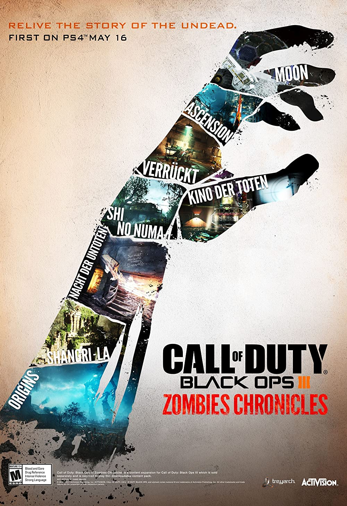

Zombies son humanos muertos reanimados por el "Elemento 115"
y son los antagonistas principales de la
modalidad de juego del mismo nombre.

Avenged Sevenfold
Avenged Sevenfold (A7X). Grupo de metal estadounidense, formado en 1999, en California. Sus miembros iniciales fueron M.Shadows (Matthew Sanders), Zacky Vengeance (Zachary Baker), The Rev (James Sullivan)
y Matt Wendt. El nombre del grupo está inspirado en la historia de la Biblia de Caín y Abel (Significa "Vengado siete veces").
Call Of Duty Zombies
a
s
La agrupación de rock metal, Avenged Sevenfold, también son conocidos ya que varios de sus temas han sido elegidos para formar parte de varias versiones
del videojuego Call Of Duty.
13 de noviembre,"Call Of Duty: Black Ops II",AVENGED SEVENFOLD anunció participación con "Carry On"